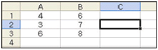
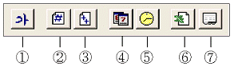
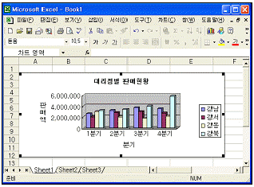
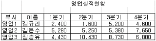
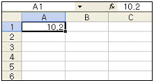
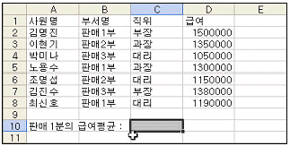
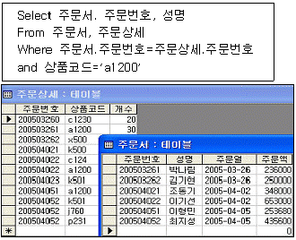
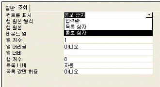
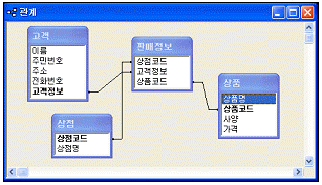
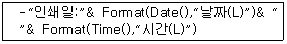

컴퓨터활용능력-1급 (2006-05-14 기출문제)
1과목: 컴퓨터 일반
1. 다음은 PC의 업그레이드 사례이다. 소프트웨어적인 업그레이드는 어느 것인가?
- 주메모리(RAM)를 64Mbyte로 늘인다.
- 중앙처리장치(CPU)를 Pentium IV 2.40GHz로 교체한다.
- Windows 98 운영체제를 Windows XP로 바꾼다.
- 하드디스크를 100Gbyte로 교체한다.
(정답률: 85%)

2. 다음 중 컴퓨터에서 정상적인 프로그램을 처리하고 있는 도중에 특수한 상태가 발생했을 때 현재 실행하고 있는 프로그램을 일시 중단하고, 그 특수한 상태를 처리한 후 다시 원래의 프로그램을 처리하는 과정을 무엇이라 하는가?
- 채널(Channel)
- 인터럽트(Interrupt)
- 데드락(Deadlock)
- 스풀(Spool)
(정답률: 81%)
3. 인터넷 사용 시 기본예절에 대한 설명 중 거리가 먼 것은?
- 파일을 전송할 때 전송량을 줄이기 위하여 데이터를 압축한다.
- 책으로 출판된 문서는 저작권에 상관없이 무조건 웹 페이지화가 가능하다.
- 중복된 글은 게시판에 올리지 않도록 한다.
- 대화방에서는 상대방을 존중하고 건전한 언어를 사용한다.
(정답률: 94%)
4. 한글 Windows에서 현재 활성화된 윈도우 탐색기 창을 닫기 위한 방법이 아닌 것은?
- [Ctrl]키와 [F4]키를 함께 누른다.
- [Alt]키와 [F4]키를 함께 누른다.
- [Alt]키와 [스페이스] 막대 키를 함께 누른 다음 창 제어 메뉴에서 [닫기]를 선택한다.
- 윈도우 탐색기 메뉴에서 [파일]-[닫기]를 선택한다.
(정답률: 80%)
5. 윈도우즈, 유닉스 등 운영체제(Operating System)의 주요 기능으로 볼 수 없는 것은?
- 하드웨어의 효과적인 제어
- 사용자의 프로그램 실행 환경 제공
- 파일과 디스크 관리기능 제공
- 스프레드시트 입력과 검색기능 제공
(정답률: 75%)
6. IPv6의 주소는 몇 비트로 구성되어 있는가?
- 32비트
- 64비트
- 128비트
- 256비트
(정답률: 79%)
7. 다음 중 멀티미디어 데이터 중에서 종류가 다른 것은?
- BMP
- MP3
- MID
- WAV
(정답률: 83%)
8. 다음 중 CD, DVD, HDTV, IMT-2000분야 등에서 동영상을 표현하기 위한 국제 표준 압축 방식은?
- MPEG
- JPEG
- GIF
- PNG
(정답률: 88%)
9. 메일 서버에 도착한 E-Mail을 사용자 컴퓨터로 가져올 수 있도록 메일 서버에서 제공하는 프로토콜은 어느 것인가?
- SMTP
- FTP
- POP3
- HTTP
(정답률: 77%)
10. Windows 환경에서 여러 LAN과 WAN이 상호 운용되고 연결되도록 해주며, 이더넷이나 토큰 링과 같은 각기 다른 네트워크 토폴로지를 가진 LAN들을 연결할 수 있는 하드웨어로, 패킷 헤더를 LAN 세그먼트에 맞추고 최적의 패킷 경로를 선택하여 네트워크 성능을 최적화하는 기능을 하는 장치는?
- 라우터
- 허브
- 브리지
- 모뎀
(정답률: 78%)
11. 다음 웹 프로그래밍 언어 중 Linux 운영체제 환경에서 동작 될 수 없는 것은?
- HTML
- ASP
- CGI
- PHP
(정답률: 57%)
12. 한글 Windows의 [디스플레이 등록정보]의 [바탕화면] 배경설정에서 사용할 수 있는 파일의 확장자로 알맞은 것은?
- HWP
- EXC
- HTML
- AVI
(정답률: 62%)
13. 웹상에서 구조적 데이터를 표현하기 위한 형식을 제공하는 메타 태그 언어로 컨텐츠에 대하여 정확히 선언할 수 있도록 해주며, 여러 플랫폼에서 의미 있는 검색 결과가 나오도록 한다. 또한, 차세대 웹 기반 데이터 보기 및 조작 응용 프로그램을 사용할 수 있도록 하는 것은?
- HTML
- VRML
- SGML
- XML
(정답률: 70%)
14. 한글 Windows에서 프린터에 대한 설명 중 올바르지 않은 것은?
- 인쇄 작업에 들어간 문서도 강제로 종료시킬 수 있다.
- 인쇄 작업은 반드시 기본프린터로 설정된 프린터에서만 인쇄가 가능하다.
- 이미 인쇄 작업이 시작된 경우라도 잠시 중지시켰다가 다시 인쇄할 수 있다.
- 여러 개의 파일들이 출력 대기 중일 때 출력 순서를 임의로 조정할 수 있다.
(정답률: 86%)
15. 한글 Windows에서 [프린터 설치]에 관련된 설명 중 옳지 않은 것은?
- 로컬 프린터와 네트워크 프린터로 구분하여 설치할 수 있다.
- PC에 직접 연결되지 않고 네트워크 상에 연결된 프린터도 기본 프린터로 설정할 수 있다.
- 하나의 시스템에 여러 대의 프린터를 모두 설치할 수 있다.
- 두 대 이상의 프린터를 기본 프린터로 지정할 수 있으며, 기본 프린터로 설정된 프린터도 삭제할 수 있다.
(정답률: 86%)
16. 다음 중 새 하드웨어 추가 메뉴에 대한 설명으로 맞지 않는 것은?
- 새로운 하드웨어를 플러그 앤 플레이(Plug and play)로 추가가 가능하다.
- 플러그 앤 플레이 기능을 지원하지 않는 하드웨어도 설치 가능하다.
- 시스템 관리 프로그램은 반드시 새 하드웨어 추가에서만 작업해야 한다.
- [제어판]의 [새 하드웨어 추가]를 이용하여 설치한다.
(정답률: 85%)
17. 중앙 처리 장치와 주기억장치 사이의 속도 차를 해결하기 위해 사용되는 기억장치는?
- 캐시 메모리
- 가상기억 장치
- 보조기억 장치
- 모듈기억 장치
(정답률: 90%)
18. 다음 중 USB 컨트롤러에 대한 설명으로 옳지 않은 것은?
- 플러그 앤 플레이 설치를 지원하는 외부 버스이다.
- USB를 사용하면 컴퓨터를 종료하거나 다시 시작하지 않아도 장치를 연결하거나 연결을 끊을 수 있다.
- 단일 USB 포트를 사용하여 스피커, 전화, CD-ROM 드라이브, 조이스틱, 테이프 드라이브, 키보드, 스캐너, 카메라와 같은 주변 기기를 최대 127개까지 연결할 수 있다.
- 범용 병렬 버스 장치를 연결할 수 있도록 해 주는 컴퓨터 인터페이스이다.
(정답률: 83%)
19. 다음 중 문자를 표현하는 코드체계에 대한 설명으로 옳지 않은 것은?
- BCD 코드 : 64가지의 문자를 표현할 수 있으나 영문 소문자는 표현 불가능하다.
- Unicode : 세계 각 국의 언어를 3바이트 체계로 통일한 국제 표준 코드이다.
- ASCⅡ 코드 : 128가지의 문자를 표현할 수 있으며, 주로 데이터 통신용이나 PC에서 많이 사용한다.
- EBCDIC 코드 : BCD 코드를 확장한 코드체계를 256가지의 문자를 표현할 수 있다.
(정답률: 75%)
20. 인터넷 서비스에 대한 설명으로 옳지 않은 것은?
- Telnet : 인터넷 상의 다른 컴퓨터에 로그인(Log-in)하여 사용할 수 있게 하는 서비스
- WAIS(Wide-Area Information Service) : 인터넷에 흩어져 있는 여러 곳의 데이터베이스로부터 데이터를 검색할 수 있는 서비스
- PING(Packet Internet Gopher) : 원격 컴퓨터의 사용자 ID와 password를 알아보기 위해 사용되는 서비스
- IRC(Internet Realy Chat) : 인터넷을 통해 채팅을 할 수 있도록 하는 서비스
(정답률: 79%)
2과목: 스프레드시트 일반
21. 마이크로소프트 엑셀에서 읽어 올 수 없는 파일 형식은?
- dBase
- LOTUS 1-2-3
- 텍스트 파일
- MS WORD
(정답률: 73%)
22. 입력된 숫자 데이터를 소수점 이하 둘째 자리까지 표시하며, 양수는 빨강색, 음수는 파랑색으로 표시하고 싶다. 사용자 정의 표시 형식으로 옳은 것은?
- [파랑][<=0]#0.00;[빨강][<=0]#0.00;#0.00
- [파랑][<0]#0.00;[빨강][>0]#0.00;#0.00
- (파랑)(<0)#0.00;(빨강)(>0)#0.00;#0.00
- (빨강)(<0)#0.00;(파랑)(>0)#0.00;#0.00
(정답률: 77%)
23. 다음 그림에서 [A2:B3]셀을 범위로 설정한 후 범위 이름을 재고수량 이라고 지정하였다. 그리고 C2셀에 =SUM(MIN(재고수량), A1)을 입력하면 이 셀의 값은?

- 6
- 7
- 8
- 9
(정답률: 79%)
24. 다음 아이콘 표시가 바르게 연결된 것은?

- 글꼴, 전체 페이지 번호, 페이지 수, 날짜, 시간, 시트이름, 파일이름
- 글꼴, 전체 페이지 번호, 페이지 수, 날짜, 시간, 파일이름, 시트이름
- 글꼴, 페이지 번호, 전체 페이지 수, 날짜, 시간, 시트이름, 파일이름
- 글꼴, 페이지 번호, 전체 페이지 수, 날짜, 시간, 파일이름, 시트이름
(정답률: 58%)
25. 다음 중 데이터 표에 대한 설명으로 옳지 않은 것은?
- 표 기능은 특정한 값이나 수식을 입력한 후 이를 이용하여 표를 자동으로 만들어 주는 기능이다.
- 표 기능은 수식이 입력될 범위를 설정한 후 표 기능을 실행해야 한다.
- 표 기능을 이용하여 수식을 입력하는 방법에는 [열 입력 셀]만 지정하는 경우, [행 입력 셀]만 지정하는 경우, [행 입력 셀]과 [열 입력 셀]을 모두 지정하는 경우가 있다.
- 표 기능을 통해 입력된 셀 중에서 표 범위의 일부분만 수정할 수 있다.
(정답률: 70%)
26. 다음 차트에 대한 설명으로 옳지 않은 것은?

- 범례의 위치는 이미 작성된 차트에서는 변경이 불가능하다.
- 데이터의 계열은 모두 4개로 되어 있다.
- X항목 축은 제목은 ‘분기’로 되어있다.
- 차트의 종류는 3차원 효과의 묶은 세로막대형이다.
(정답률: 87%)
27. 다음 엑셀 목록을 이용하여 피벗 테이블을 만들어 데이터를 분석하려고 한다. 다음 중 옳지 않은 것은?

- 원본 리스트의 데이터를 변경하여도 자동적으로 피벗 테이블에는 반영되지 않는다.
- 피벗 테이블 작성 후에 피벗 테이블의 항목을 변경할 수 있다.
- 피벗 테이블 작성 시 사용할 데이터 영역은 ‘영업 실적 현황’이 입력되어 있는 제목 셀과 테이블을 같이 지정해야만 한다.
- 피벗 테이블 작성 후에 [피벗 테이블] 도구 모음의 [차트 마법사]를 클릭하면 차트 시트가 만들어진다.
(정답률: 52%)
28. 다음 중 엑셀 문서를 웹 페이지 형식으로 저장하는 기능에 대한 설명으로 틀린 것은?
- 엑셀에서 작업한 문서를 [파일]-[웹 페이지로 저장]을 선택하여 html 형식의 문서로 저장할 수 있다.
- 엑셀에서 작업한 문서를 저장할 때 파일 형식을 웹페이지로 선택하여 저장할 수 있다.
- 엑셀에서 작업한 문서를 웹페이지로 저장하기는 가능하나, 다른 웹페이지를 불러오지는 못한다.
- [파일]-[웹 페이지로 미리보기]는 웹 페이지 형식으로 저장하면 어떤 모습인지 미리 볼 수 있다.
(정답률: 84%)
29. 다음 중 외부 텍스트 데이터를 가져오기 위한 방법으로 옳지 않은 것은?
- [파일]-[열기]를 이용해서 텍스트 파일을 선택한다.
- [데이터]-[외부 데이터 가져오기]-[텍스트 파일 가져오기]를 선택한다.
- 텍스트 파일은 ‘텍스트 나누기’와 동일하게 ‘텍스트 마법사’를 사용하여 수행한다.
- 텍스트 파일은 항목이 반드시 콜론이나 쉼표로만 분리되어야 한다.
(정답률: 77%)
30. WorkSheets 개체의 주요 속성과 메서드에 대한 설명으로 옳지 않은 것은?
- Protect : 워크시트를 보호한다.
- Range : 워크시트에서 셀이나 셀 범위를 나타낸다.
- Activate : 워크시트의 표시 여부를 나타낸다.
- EntireRow : 지정한 범위에 들어 있는 행 전체를 나타낸다.
(정답률: 74%)
31. 다음 그림에서 [A1] 셀에서 채우기 핸들을 끌었을 때 [A4]셀에 입력되는 값은?

- 10.2
- 10.8
- 13.2
- 10.5
(정답률: 60%)
32. 아래의 시트에서 부서명이 “판매1부”인 직원들의 급여 평균을 [C10] 셀에 구하는 배열 수식으로 올바른 것은?

- ={AVERAGE(IF(B2:B8=“판매1부”,B2:B8))}
- {=AVERAGE(IF(B2:B8=“판매1부”,B2:B8))}
- ={AVERAGE(IF(B2:B8=“판매1부”,D2:D8))}
- {=AVERAGE(IF(B2:B8=“판매1부”,D2:D8))}
(정답률: 78%)
33. 다음 중 그룹 및 윤곽 설정 기능에 대한 설명으로 옳지 않은 것은?
- 그룹 및 윤곽 설정 기능은 그룹별 계산을 자동으로 수행해 주며 열로만 그룹을 묶을 수 있다.
- 그룹으로 묶기 위해서는 데이터를 정렬할 때 오름차순 방식과 내림차순 방식 중 어떤 것을 사용해도 상관없다.
- 그룹이 설정되면 자동으로 윤곽 기호가 표시되며 윤곽기호는 현재 보이는 데이터들의 수준을 조절하기 위해 사용된다.
- 그룹을 해제하려면 그룹의 모든 데이터를 범위로 설정한 후 [데이터]-[그룹 및 윤곽설정]-[그룹 해제]를 클릭하면 된다.
(정답률: 69%)
34. 다음은 매크로 이름에 대한 설명이다. 옳지 않은 것은?
- 기록할 매크로 이름을 지정하는 것으로 기본적으로는 Macro1, Macro2와 같이 붙여진다.
- 매크로 이름에는 +, -, &, ? 등의 특수 문자들은 포함할 수 없지만, 띄어쓰기는 해도 된다.
- 매크로 이름을 문자와 혼합하지 않고 오직 숫자로만 작성할 수는 없다.
- 매크로 이름 지정 시 첫 글자는 반드시 문자로 작성하여야 하고, 두 번째부터 문자, 숫자, 밑줄 문자 등의 사용이 가능하다.
(정답률: 73%)
35. 다음 제어문 중 반복문이 아닌 것은?
- Select ~ Case ~ End Select
- For ~ next
- Do ~ Loop
- While ~ Wend
(정답률: 67%)
36. 다음 중 주어진 수식에 대한 결과 값이 옳지 않은 것은?
- =ROUNDUP(3.14159, 3) => 3.142
- =DAYS360(2006-5-1,2006-5-8) => 7
- =NOT(0=0) => FALSE
- =COUNT(“COUNT”,1,2,3,“A”) => 3
(정답률: 69%)
37. 다음 중 매크로에 대한 설명으로 옳지 않은 것은?
- ActiveCell.Interior.ColorIndex=3 => 액티브 셀(개체)의 채우기(속성)을 빨강색으로 지정
- WorkSheets.Add => 새로운 위크시트를 삽입
- Range(“A5”).Select => A5셀로 셀포인터 이동
- Range(“A1”).Formula=“3*4” => A1셀에 3*4를 계산한 값 12 입력
(정답률: 52%)
38. 다음 중 지도 차트에 대한 설명으로 옳지 않은 것은?
- 지도 차트를 만들 때는 반드시 열에 지역이나 국가 이름을 입력해야 하며, 명칭은 엑셀에 등록되어 있는 형태로 사용되어야 한다.
- 지도 차트에서 각 지역별 데이터의 크기를 점의 개수로 구분하여 표시하면 등급차트가 된다.
- 엑셀을 설치할 때 표준으로 설치한 경우에는 지도 기능(Microsoft Map)이 설치되지 않기 때문에 원본 CD를 삽입하여 지도 기능을 추가해 주어야 한다.
- 지도의 각 지역에는 이름표를 추가할 수 있다.
(정답률: 51%)
39. 다음은 워크시트에 입력된 도형을 제외하고 인쇄하려고 할 때 맞는 것은?
- 입력된 도형을 선택한 후 [서식]-[도형]을 선택하고 [도형서식] 대화상자의 ‘속성’ 탭에서 ‘개체 인쇄’를 해제한 후 ‘확인’을 클릭한다.
- [파일]-[페이지 설정] 대화상자의 ‘시트’ 탭에서 ‘흑백으로’ 항목에 체크하고 ‘확인’을 클릭한다.
- [파일]-[페이지설정] 대화상자의 ‘시트’ 탭에서 ‘간단하게 인쇄’ 항목에 체크를 해제하고 ‘확인’을 클릭한다.
- [파일]-[페이지 설정] 대화상자의 ‘시트’ 탭에서 ‘시험 출력’ 항목에 체크를 해제하고 ‘확인’을 클릭한다.
(정답률: 70%)
40. 현재 워크시트의 A1 셀의 값과 “판매량.xls” 파일에 들어 있는 “5월” 워크시트의 A1 셀의 갑을 더하는 계산을 하려고 할 때, 수식을 바르게 표현한 것은?
- =A1+판매량[5월!]A1
- =A1+‘[판매량.xls]5월’!$A$1
- =A1+[판매량.xls]5월$A$1
- =A1+[판매량.xls]5월![$A$1]
(정답률: 55%)
3과목: 데이터베이스 일반
41. 두 테이블에 대해 다음의 질의문을 실행한 결과 레코드 수는?

- 3개
- 4개
- 5개
- 6개
(정답률: 78%)
42. 다음 중 매크로를 직접 실행하는 방법으로 잘못 표현한 것은?
- 매크로 창에서 매크로를 실행하려면 도구 모음의 실행 을 클릭한다.
- 데이터베이스 창에서 매크로를 실행하려면 매크로 를 클릭한 다음 매크로 이름을 더블 클릭한다.
- [도구]-[매크로]-[매크로실행]을 클릭한 다음 실행할 매크로 이름을 선택하고 [확인]을 클릭한다.
- DoCmd 개체의 OpenModule 메서드를 사용하여 Microsoft Visual Basic 프로시저로 매크로를 실행한다.
(정답률: 51%)
43. 다음 중 HAVING 절과 WHERE 절의 가장 큰 차이는 무엇인가?
- 조건 지정 여부
- 정렬 여부
- 그룹화 여부
- 함수 사용 여부
(정답률: 75%)
44. 그림과 같이 [조회] 탭의 [컨트롤 표시]에 목록상자나 콤보상자를 선택했을 때 적용되는 속성에 대한 설명으로 옳지 않은 것은?

- 바운드 열, 열 개수, 행 개수, 목록값만 허용 등의 속성은 콤보상자와 목록상자에 공통적으로 적용되는 속성이다.
- 바운드 열은 특정한 값을 선택했을 때 바운드된 필드에 실제로 어떤 값을 저장할 것인지를 선택하는 것이다.
- 열 너비 속성을 사용하여 하나 이상의 열을 숨길 수 있다.
- 행 개수는 목록 부분에 표시할 최대 행의 수를 지정한다.
(정답률: 43%)
45. 회원(회원번호, 이름, 나이, 주소) 테이블에서 주소가 ‘인천’인 회원의 이름과 나이를 검색하되, 나이가 많은 순으로 검색하는 질의문으로 옳은 것은?
- SELECT * FROM 회원 WHERE 주소=‘인천’ ORDER BY 나이 ASC
- SELECT 이름, 나이 FROM 회원 WHERE 주소=‘인천’ ORDER BY 나이 ASC
- SELECT * FROM 회원 WHERE 주소=‘인천’ ORDER BY 나이 DESC
- SELECT 이름, 나이 FROM 회원 WHERE 주소=‘인천’ ORDER BY 나이 DESC
(정답률: 64%)
46. 다음 중 보고서에 관한 설명으로 맞는 것은?
- ‘파일로 인쇄’를 선택하면 보고서를 저장하는 파일은 확장자가 *.mdb이다.
- 주소 레이블 보고서는 주소 레이블 마법사를 통해서만 작성할 수 있다.
- 보고서 컨트롤에서는 컨트롤 원본을 이용하여 특정 필드에 바운드시킬 수 없다.
- 폼 바닥글이나 보고서 바닥글에 요약 정보를 표시할 수 있다.
(정답률: 50%)
47. 폼에서 특정 컨트롤의 값을 수정할 수 없도록 보호하려고 한다. 이 경우 컨트롤의 어떤 속성을 이용해야 하는가?
- 잠금(Locked)
- 컨트롤 원본(Control Source)
- 탭 정지
- 레코드 원본(Record Source)
(정답률: 78%)
48. 다음은 색인(Index)에 대한 설명이다. 가장 옳지 않은 것은?
- 하나의 필드나 필드 조합에 인덱스를 만들어 레코드 찾기와 정렬을 효율적으로 수행할 수 있게 한다.
- 색인을 많이 설정하면 테이블의 변경 속도가 저하될 수 있다.
- 인덱스를 삭제하면 필드나 필드 데이터도 함께 삭제된다.
- 레코드를 변경하거나 추가할 때마다 자동으로 업데이트 된다.
(정답률: 71%)
49. Visual Basic 프로시저, 변수 이름 지정 방법에 대한 설명으로 옳지 않은 것은?
- 문장 부호나 공백을 포함할 수 없다.
- 255자까지 가능하다.
- 문자, 숫자, 밑줄 문자(_)를 포함한다.
- Visual Basic 키워드를 이름으로 지정할 수 있다.
(정답률: 55%)
50. 폼바닥글에 사원 테이블에서 직급이 ‘부장’인 레코드들의 급여 평균을 구하고자 할 때 올바른 함수식은?
- =DAVG(“[급여]”, “[사원]”, “[직급]=‘부장’”)
- =DCOUNT(“[급여]”, “[사원]”, “[직급]=‘부장’”)
- =DLOOKUP(“[급여]”, “[사원]”, “[직급]=‘부장’”)
- =DSUM(“[급여]”, “[사원]”, “[직급]=‘부장’”)
(정답률: 81%)
51. 다음 SQL문에서 DISTINCT의 의미는?
- 학과 순서대로 정렬하여 표시
- 모든 학과를 표시
- 중복되는 학과는 한번만 표시
- 중복적으로 존재하는 학과만 표시
(정답률: 78%)
52. 다음은 하위폼에 대한 설명이다. 틀린 것은?
- 폼 안에 있는 또 하나의 폼이다.
- 기본 폼에 포함될 수 있는 하위 폼의 수에는 제한이 있다.
- 기본 폼은 단일 폼으로 표시된다.
- 다중 테이블을 사용하여 데이터를 조회하거나 입력할 수 있다.
(정답률: 68%)
53. 그림은 물건구매 관련 정보를 관리하기 위한 데이터베이스 테이블의 관계를 표시한 것이다. 고객은 여러 상점에서 여러 개의 물건을 구매할 수 있다고 가정 할 때, 판매정보를 중심으로 관계에 관한 설명 중 가장 적절치 않은 것은?

- 고객과 판매정보의 관계는 일대다 관계로 볼 수 있다.
- 고객과 상품과의 관계는 다대다 관계로 볼 수 있다.
- 상점과 판매정보의 관계는 일대다 관계로 볼 수 있다.
- 고객과 상점과의 관계는 일대다 관계로 볼 수 있다.
(정답률: 63%)
54. 다음 중 보고서의 구역에 대한 설명 중 가장 옳지 않은 것은?
- 본문, 보고서 머리글/바닥글, 페이지 머리글/바닥글 등의 구역으로 구성된다.
- 본문은 레코드 원본의 각 레코드들이 인쇄되는 구역이다.
- 페이지 머리글/바닥글에는 함수를 이용하여 레코드의 개수, 합계, 평균 등과 같은 요약 정보를 표시할 수 있다.
- 그룹 머리글/바닥글에는 그룹의 이름, 그룹별 요약정보 등을 표시할 수 있다.
(정답률: 65%)
55. 데이터베이스를 생성하거나 데이터베이스의 구조형태를 수정하기 위해서 사용되는 언어로 데이터베이스의 논리적 구조와 물리적 구조를 정의할 수 있는 기능을 제공하는 것은 무엇인가?
- DML
- DCL
- DDL
- Query Language
(정답률: 66%)
56. 보고서를 다른 형식으로 [내보내기]를 할 때, 지원되지 않는 형식은?
- Snapshot Format
- Microsoft Word
- 서식 있는 텍스트
- Microsoft Access
(정답률: 67%)
57. 엑세스(Access)에서 테이블을 만드는 5가지 방법이 있다. 다음 중 테이블을 만드는 5가지 방법을 올바르게 기술한 것은?
- 데이터시트보기, 디자인보기, 테이블마법사, 테이블가져오기, 테이블연결
- 데이터시트보기, 조회마법사, 디자인보기, 테이블마법사, 테이블가져오기
- 데이터시트보기, 조회마법사, 테이블연결, 테이블마법사, 테이블가져오기
- 데이터시트보기, 피벗테이블마법사, 디자인보기, 테이블마법사, 테이블연결
(정답률: 61%)
58. 하위 폼은 주로 일대 다 관계가 설정되어 있는 테이블/쿼리를 효과적으로 표시하기 위해 사용된다. 이 때 기본 폼과 하위 폼 작성법으로 맞는 것은?
- 기본 폼은 ‘일’쪽 테이블/쿼리를 원본으로, 하위 폼은 ‘다’쪽 테이블/쿼리를 원본으로 하여 저장한다.
- 기본 폼은 ‘다’쪽 테이블/쿼리를 원본으로, 하위 폼은 ‘일’쪽 테이블/쿼리를 원본으로 하여 저장한다.
- 기본 폼과 하위 폼 모두 ‘일’쪽 테이블/쿼리를 원본으로 작성한다.
- 기본 폼과 하위 폼 모두 ‘다’쪽 테이블/쿼리를 원본으로 작성한다.
(정답률: 77%)
59. 보고서의 페이지 바닥글에 인쇄 날짜와 시간을 출력하기 위한 컨트롤의 식이 다음과 같다. 이에 대한 설명으로 옳지 않은 것은?

- 식에서 Format(), Date(), Time()은 모두 함수이다.
- 컨트롤에 입력되는 식은 반드시 = 로 시작해야 한다.
- 식에 대한 출력결과는 인쇄일 : 2006-⑤-14 10:00와 같은 형식으로 출력된다.
- 식에서 &는 문자열을 결합하기 위한 연산자이다.
(정답률: 60%)
60. 데이터베이스 설계시 데이터의 정규화(normalization)에 대한 설명으로 옳지 않은 것은?
- 데이터의 이상(anomaly) 현상이 발생하지 않도록 하는 것이다.
- 속성(attribute) 수가 적은 릴레이션 스크마들로 분할하는 과정이다.
- 릴레이션의 속성들 사이의 종속성 개념에 기반을 두고 이러한 종속성을 제거하는 과정이라고 할 수 있다.
- 릴레이션을 항상 최상위 수준의 정규형으로 정규화하여야 한다.
(정답률: 73%)
이유: Windows 98과 Windows XP는 서로 다른 운영체제이기 때문에, 이 업그레이드는 소프트웨어적인 업그레이드에 해당한다. 다른 보기들은 하드웨어적인 업그레이드에 해당한다.